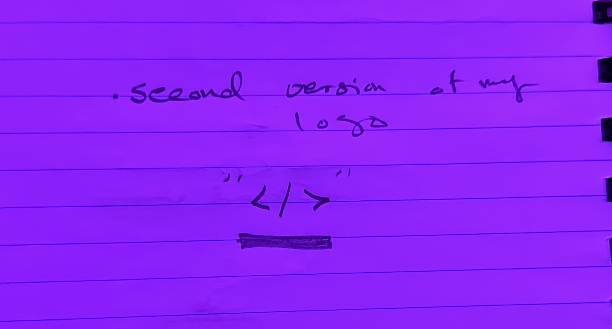

Media production is an essential aspect of media design, encompassing
the creation, editing, and distribution of captivating visual and
auditory content. It allows designers to bring their creative visions
to life, incorporating advanced technology and software applications.
Through media production, designers can engage and inspire audiences,
deliver impactful messages, and adapt content for various platforms.
It empowers designers to create immersive experiences that leave a
lasting impact in today's digital landscape.
Logo:
For the past few weeks, I've been putting a lot of effort into designing
my logo, as I believe it's a crucial component of my brand identity. I
wanted my logo to convey my values and personality, so I spent some time
brainstorming different ideas and experimenting with various shapes and
colors.
After coming up with a few different versions, I decided to ask my
teacher for feedback.They were very helpful and provided some insightful
suggestions on how I could improve the logo. I took their feedback on
board and made some changes to create a new version that I'm really
happy with.
I decided to incorporate the symbol into my logo to represent my passion
for coding and technology. It felt like a natural fit for my brand and
helped me stand out in my field. I also chose a color scheme that felt
right for my brand and represented my values. I'm excited to start using
my new logo and see how it resonates with my audience. I believe that it
accurately represents who I am and what I stand for, and I hope it helps
me to connect with like-minded individuals and businesses.

Note:
My next step is to continue improving my logo design by experimenting
with different color schemes and styles. I want to ensure that my logo
accurately reflects my brand identity and stands out in my industry. To
get feedback on my logo, I plan to reach out to people with experience
in design and branding. I believe their expertise and insights will be
valuable in helping me create a professional and memorable logo.
Ultimately, my goal is to have an amazing logo that accurately
represents my values and personality, and helps me connect with my
target audience. I'm excited to see where this journey takes me and look
forward to sharing my progress with others.
Photo Book:
Introducing the Photobook: A Journey of Creation and Discovery Within
the captivating pages of this photobook lies a testament to my creative
exploration and personal growth. Utilizing the powerful tools of Adobe
InDesign, I embarked on a project that would challenge me in new and
unexpected ways. Through this endeavor, I learned to view the world
through different angles and perspectives. Each photograph became an
opportunity to discover hidden details and evoke emotions, as I
skillfully curated a narrative flow that would captivate and inspire.
The process of creating this photobook allowed me to expand my design
skills and push the boundaries of my creativity. Adobe InDesign became
my trusted ally, empowering me to bring each page to life, balancing
visual elements, and crafting a cohesive story. In this remarkable
collection, you will witness the challenges I encountered and the
triumphs that emerged along the way.
Video
For our video assignment, our group embarked on a creative journey
to capture the essence of a student's day.
As we brainstormed ideas, each group member contributed their
unique perspective. However, it was my role to bring our vision to
life behind the camera, assuming the position of the primary
videographer.
Equipped with the remarkable capabilities of the iPhone 14 Pro
Max, I embraced the opportunity to showcase the video's potential.
With its ability to record in stunning 4K resolution at 24 frames
per second, I aimed to infuse our footage with a cinematic feel.
Leveraging the 1x and 3x zoom features, I skillfully focused on
the main individuals, ensuring their presence stood out amidst the
bustling school environment.
Upon completing the filming process, I collaborated with my
teammate, Josh, to bring our individual shots together into a
cohesive narrative. Utilizing the powerful editing software,
DaVinci Resolve Studio, we meticulously crafted each frame to
maintain the viewer's engagement. Seamlessly weaving transitions
between scenes, we aimed to create a fluid and visually
captivating experience.
To further enhance the impact of our video, we carefully selected
background music from YouTube, aiming to evoke the desired
emotions and complement the unique atmosphere of each individual
film. With attention to detail, we aimed to strike a harmonious
balance between the visuals and the accompanying audio.
With our final edit complete, I eagerly presented our video to our
teacher, who responded with satisfaction. Appreciative of his
guidance, I actively sought to implement the valuable feedback he
provided. This included addressing the length of certain films and
incorporating different music backgrounds to diversify the overall
experience.
Through my commitment, technical skills, and willingness to adapt,
I was able to refine our video to align more closely with our
original vision. It is with pride and enthusiasm that I share with
you the culmination of my individual efforts, along with the
collective creativity and collaboration of our entire group.